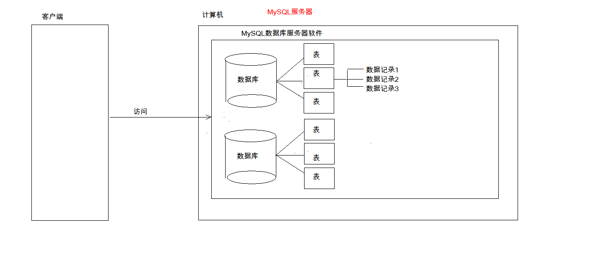
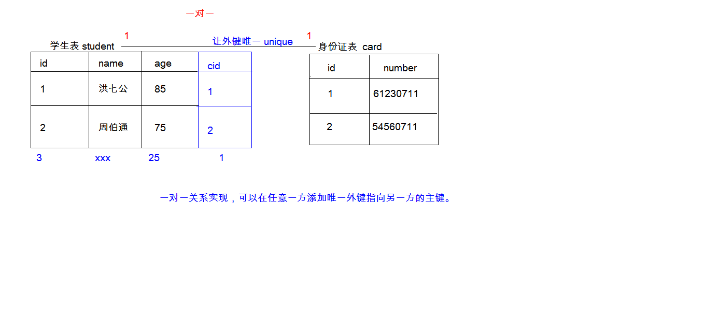
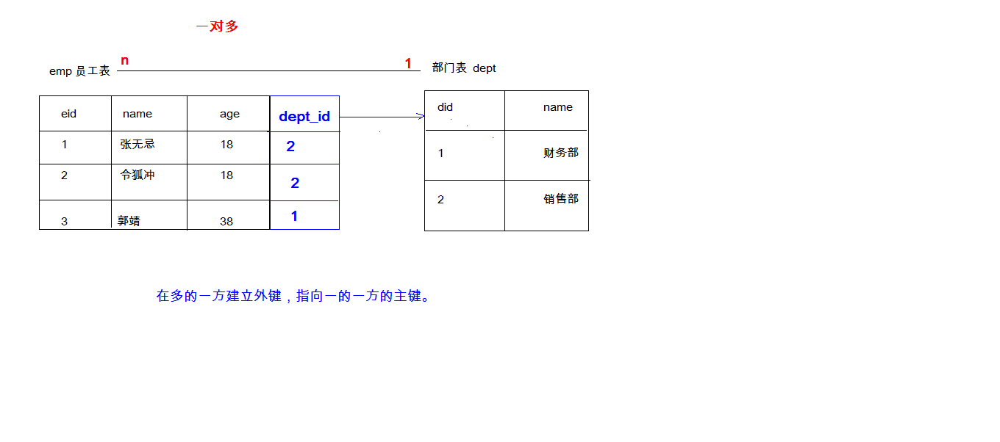
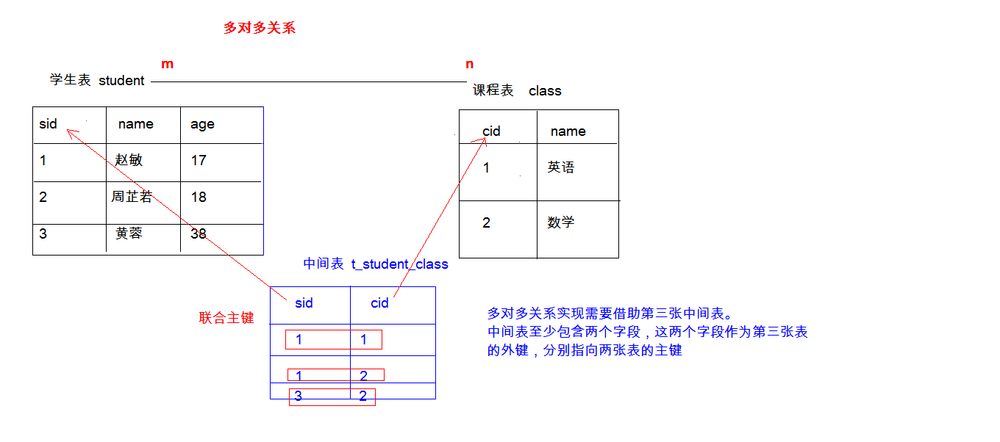
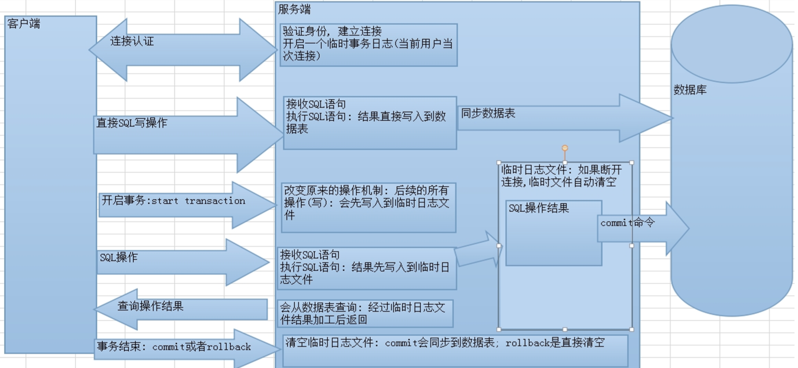

一、数据库
- 数据库特点：
- 持久化存储数据，数据库就是一个文件系统
- 方便存储和管理数据
- 使用同一方式操作数据库--SQL
- DOS命令
- servises.msc---------打开任务管理器
- net stop mysql-------------打开数据库服务
- net start mysql-------------关闭数据库服务
- 
二、MySQL目录结构
- MySQL安装目录
- 配置文件my.ini
- MySQL数据目录
- 数据库服务器：安装了数据库软件的电脑
- 数据库管理系统
- 数据库：文件夹
- 表：文件
- 数据：数据
三、SQL
- 概念：Structured Query Language：结构化查询语言，其实就是定义了操作所有关系型数据库的规则。每一种数据库操作的方式存在不一样的地方，称为“方言”。
- 通用语法：
- SQL语句可以单行或多行书写，以分号结尾
- 可以使用空格和缩进来增强语句的可读性
- MySQL数据库的SQL语句不区分大小写（关键字建议大写）
- 3种注释
- 单行注释：-- （空格）注释内容（两个横杠注释中间必须加空格） 或 #注释内容（MySQL特有方式）
- 多行注释：/* 注释 */
- 退出：
- exit
- quit
- SQL分类
- DDL(Data Definition Language)数据定义语言：
- 用来定义数据库对象：数据库，表，列等。关键字：create, drop,alter 等
- DML(Data Manipulation Language)数据操作语言:
- 用来对数据库中表的数据进行增删改。关键字：insert, delete, update 等
- DQL(Data Query Language)数据查询语言
- 用来查询数据库中表的记录(数据)。关键字：select, where 等
- DCL(Data Control Language)数据控制语言(了解)
- 用来定义数据库的访问权限和安全级别，及创建用户。关键字：GRANT， REVOKE 等

- DDL：操作数据库、表
- 操作数据库：CRUD
- C(Create):创建
- 创建数据库：
- create database 数据库名称;
- 创建数据库，判断不存在，再创建：
- create database if not exists 数据库名称;
- 创建数据库，并指定字符集
- create database 数据库名称 character set 字符集名;
- R(Retrieve)：查询
- 查询所有数据库的名称:
- show databases;
- 查询某个数据库的字符集:查询某个数据库的创建语句
- show create database 数据库名称;
- U(Update):修改
- 修改数据库的字符集
- alter database 数据库名称 character set 字符集名称;
- D(Delete):删除
- 删除数据库
- drop database 数据库名称;
- 判断数据库存在，存在再删除
- drop database if exists 数据库名称;
- 使用数据库
- 查询当前正在使用的数据库名称
- select database();
- use 数据库名称；
- 操作表
- C(Create)创建
create table 表名(
列名1 数据类型1,
列名2 数据类型2,
....
列名n 数据类型n
);
注意：最后一列，不需要加逗号（,）
* 数据库类型：
1. int：整数类型
* age int,
2. double:小数类型
* score double(5（一共有5位）,2（小数点后面保留2位）)
3. date:日期，只包含年月日，yyyy-MM-dd
4. datetime:日期，包含年月日时分秒 yyyy-MM-dd HH:mm:ss
5. timestamp:时间戳类型 包含年月日时分秒 yyyy-MM-dd HH:mm:ss
* 如果将来不给这个字段赋值，或赋值为null，则默认使用当前的系统时间，来自动赋值
6. varchar：字符串
* name varchar(20):姓名最大20个字符
* zhangsan 8个字符 张三 2个字符
复制表：create table 表名 like 被复制的表名;
创建学生表示例：
create table student(
id int,
name varchar(32),
age int,
score double(4,1),
birthday date,
insert_time timestamp
);
- R(Retrieve):查询
查询某个数据库中所有的表名称
* show tables;
查询表结构
* desc 表名;
- U(Update):修改
1. 修改表名
alter table 表名 rename to 新的表名;
2. 修改表的字符集
alter table 表名 character set 字符集名称;
3. 添加一列
alter table 表名 add 列名 数据类型;
4. 修改列名称 类型
alter table 表名 change 列名 新列名 新数据类型;
alter table 表名 modify 列名 新数据类型;
5. 删除列
alter table 表名 drop 列名;
- D(Delete)：删除
* drop table 表名;
* drop table if exists 表名
- DML增删改表中数据
1. 添加数据：
* 语法：
* insert into 表名(列名1,列名2,...列名n) values(值1,值2,...值n);
insert into student(name,sex,information) values("周秦星","男","Java 学员");
* 注意：
1. 列名和值要一一对应。
2. 如果表名后，不定义列名，则默认给所有列添加值
insert into 表名 values(值1,值2,...值n);
3. 除了数字类型，其他类型需要使用引号(单双都可以)引起来
2. 删除数据：
* 语法：
* delete from 表名 [where 条件]
* 注意：
1. 如果不加条件，则删除表中所有记录。
2. 如果要删除所有记录
1. delete from 表名; -- 不推荐使用。有多少条记录就会执行多少次删除操作,不会重置表结构
2. TRUNCATE TABLE 表名; -- 推荐使用，效率更高 先删除表，然后再创建一张一样的表。 truncate table tableNmae;
3. 修改数据：
* 语法：
* update 表名 set 列名1 = 值1, 列名2 = 值2,... [where 条件];
* 注意：
1. 如果不加任何条件，则会将表中所有记录全部修改。
- DQL:查询表中的记录
* select * from 表名;
1. 语法：select * from w g h o l
select
字段列表
from
表名列表
where
条件列表
group by
分组字段
having
分组之后的条件
order by
排序
limit
分页限定
2.基础查询
1. 多个字段的查询
select 字段名1，字段名2... from 表名；
* 注意：
* 如果查询所有字段，则可以使用*来替代字段列表。
2. 去除重复：
* distinct
示例：SELECT DISTINCT address FROM student;
3. 计算列
* 一般可以使用四则运算计算一些列的值。（一般只会进行数值型的计算）
* ifnull(表达式1,表达式2)：null参与的运算，计算结果都为null
* 表达式1：哪个字段需要判断是否为null
* 如果该字段为null后的替换值。
示例：SELECT NAME,address,english + IFNULL(chinaese,0) FROM student;
4. 起别名：
* as：as也可以省略
SELECT NAME,IFNULL(english,0) + IFNULL(math,0) + IFNULL(chinaese,0) AS 总分 FROM student;
3.条件查询
1. where子句后跟条件
2. 运算符
* > 、< 、<= 、>= 、= 、<>
* BETWEEN...AND (大于等于，小于等于)
* IN( 集合)
* LIKE：模糊查询
* 占位符：
* _:单个任意字符
* %：多个任意字符
示例：SELECT * FROM student WHERE NAME LIKE "___";
SELECT * FROM student WHERE NAME LIKE "%盖%";
* IS NULL
* IS NOT NULL
* and 或 &&
* or 或 ||
* not 或 !
4.排序查询
* 语法：order by 子句
* order by 排序字段1 排序方式1 ， 排序字段2 排序方式2...
* 排序方式：
* ASC：升序，默认的。
* DESC：降序。
* 注意：
* 如果有多个排序条件，则当前边的条件值一样时，才会判断第二条件。
2. 聚合函数：将一列数据作为一个整体，进行纵向的计算。
1. count：计算个数
1. 一般选择非空的列：主键
2. count(*)
2. max：计算最大值
3. min：计算最小值
4. sum：计算和
5. avg：计算平均值
* 注意：聚合函数的计算，排除null值。
解决方案：
1. 选择不包含非空的列进行计算
2. IFNULL函数
3. 分组查询:
1. 语法：group by 分组字段；
2. 注意：
1. 分组之后查询的字段：分组字段、聚合函数
2. where 和 having 的区别？
1. where 在分组之前进行限定，如果不满足条件，则不参与分组。having在分组之后进行限定，如果不满足结果，则不会被查询出来
2. where 后不可以跟聚合函数，having可以进行聚合函数的判断。
示例：SELECT sex,AVG(chinese),COUNT(sex) FROM student WHERE id > 4 GROUP BY sex HAVING COUNT(sex) > 1;
4. 分页查询
1. 语法：limit 开始的索引,每页查询的条数;
2. 公式：开始的索引 = （当前的页码 - 1） * 每页显示的条数
-- 每页显示3条记录
SELECT * FROM student LIMIT 0,3; -- 第1页
SELECT * FROM student LIMIT 3,3; -- 第2页
SELECT * FROM student LIMIT 6,3; -- 第3页
3. limit 是一个MySQL"方言"
三、约束
* 概念： 对表中的数据进行限定，保证数据的正确性、有效性和完整性。
* 分类：
1. 主键约束：primary key
2. 非空约束：not null
3. 唯一约束：unique
4. 外键约束：foreign key
* 非空约束：not null，某一列的值不能为null
1. 创建表时添加约束
CREATE TABLE stu(
id INT,
NAME VARCHAR(20) NOT NULL -- name为非空
);
2. 创建表完后，添加非空约束
ALTER TABLE stu MODIFY NAME VARCHAR(20) NOT NULL;
3. 删除name的非空约束
ALTER TABLE stu MODIFY NAME VARCHAR(20);
* 唯一约束：unique，某一列的值不能重复
1. 注意：
* 唯一约束可以有NULL值，null值可以重复
2. 在创建表时，添加唯一约束
CREATE TABLE stu(
id INT,
phone_number VARCHAR(20) UNIQUE -- 手机号
);
3. 删除唯一约束
ALTER TABLE stu DROP INDEX phone_number;
4. 在表创建完后，添加唯一约束
ALTER TABLE stu MODIFY phone_number VARCHAR(20) UNIQUE;
* 主键约束：primary key。
1. 注意：
1. 含义：非空且唯一
2. 一张表只能有一个字段为主键
3. 主键就是表中记录的唯一标识
2. 在创建表时，添加主键约束
create table stu(
id int primary key,-- 给id添加主键约束
name varchar(20)
);
3. 删除主键
-- 错误 alter table stu modify id int ;
ALTER TABLE stu DROP PRIMARY KEY;
4. 创建完表后，添加主键
ALTER TABLE stu MODIFY id INT PRIMARY KEY;
5. 自动增长：
1.概念：如果某一列是数值类型的，使用 auto_increment 可以来完成值得自动增长
2. 在创建表时，添加主键约束，并且完成主键自增长
create table stu(
id int primary key auto_increment,-- 给id添加主键约束
name varchar(20)
);
3. 删除自动增长
ALTER TABLE stu MODIFY id INT;
4. 添加自动增长
ALTER TABLE stu MODIFY id INT AUTO_INCREMENT;
* 外键约束：foreign key,让表于表产生关系，从而保证数据的正确性。
1. 在创建表时，可以添加外键
* 语法：
create table 表名(
....
外键列
constraint 外键名称 foreign key (外键列名称) references 主表名称(主表列名称)
);
2. 删除外键
ALTER TABLE 表名 DROP FOREIGN KEY 外键名称;
3. 创建表之后，添加外键
ALTER TABLE 表名 ADD CONSTRAINT 外键名称 FOREIGN KEY (外键字段名称) REFERENCES 主表名称(主表列名称);
4. 级联操作
1. 添加级联操作（on update cascade on delete cascade）
语法：ALTER TABLE 表名 ADD CONSTRAINT 外键名称
FOREIGN KEY (外键字段名称) REFERENCES 主表名称(主表列名称) ON UPDATE CASCADE ON DELETE CASCADE ;
2. 分类：
1. 级联更新：ON UPDATE CASCADE
2. 级联删除：ON DELETE CASCADE
四、数据库的设计
一对一关系

一对多关系

多对多关系

1. 多表之间的关系
1. 分类：
1. 一对一(了解)：
* 如：人和身份证
* 分析：一个人只有一个身份证，一个身份证只能对应一个人
2. 一对多(多对一)：
* 如：部门和员工
* 分析：一个部门有多个员工，一个员工只能对应一个部门
3. 多对多：
* 如：学生和课程
* 分析：一个学生可以选择很多门课程，一个课程也可以被很多学生选择
2. 实现关系：
1. 一对多(多对一)：
* 如：部门和员工
* 实现方式：在多的一方建立外键，指向一的一方的主键。
示例：
CREATE TABLE employee(
id INT PRIMARY KEY AUTO_INCREMENT,
NAME VARCHAR(20),
age INT,
del_id INT,-- 外键对应主表的主键
CONSTRAINT emp_dep FOREIGN KEY (del_id) REFERENCES deparment(id)
);
2. 多对多：
* 如：学生和课程
* 实现方式：多对多关系实现需要借助第三张中间表。中间表至少包含两个字段，这两个字段作为第三张表的外键，分别指向两张表的主键
示例：
CREATE TABLE tab_favorite(
rid INT,
DATE DATETIME,
uid INT,
PRIMARY KEY(rid,uid),
FOREIGN KEY (rid) REFERENCES tab_route(rid),
FOREIGN KEY(uid) REFERENCES tab_user(uid)
);
3. 一对一(了解)：
* 如：人和身份证
* 实现方式：一对一关系实现，可以在任意一方添加唯一外键指向另一方的主键。
2. 数据库设计的范式
* 概念：设计数据库时，需要遵循的一些规范。要遵循后边的范式要求，必须先遵循前边的所有范式要求
设计关系数据库时，遵从不同的规范要求，设计出合理的关系型数据库，这些不同的规范要求被称为不同的范式，各种范式呈递次规范，越高的范式数据库冗余越小。
目前关系数据库有六种范式：第一范式（1NF）、第二范式（2NF）、第三范式（3NF）、巴斯-科德范式（BCNF）、第四范式(4NF）和第五范式（5NF，又称完美范式）。
* 分类：
1. 第一范式（1NF）：每一列都是不可分割的原子数据项
存在问题：
1.存在非常严重额数据冗余（重复）
2.数据添加存在问题，数据会不合法
3.数据删除存在问题，删除数据，会将其他数据一起删除
2. 第二范式（2NF）：在1NF的基础上，非码属性必须完全依赖于码（在1NF基础上消除非主属性对主码的部分函数依赖）
* 几个概念：
1. 函数依赖：A-->B,如果通过A属性(属性组)的值，可以确定唯一B属性的值。则称B依赖于A
例如：学号-->姓名。 （学号，课程名称） --> 分数
2. 完全函数依赖：A-->B， 如果A是一个属性组，则B属性值的确定需要依赖于A属性组中所有的属性值。
例如：（学号，课程名称） --> 分数
3. 部分函数依赖：A-->B， 如果A是一个属性组，则B属性值的确定只需要依赖于A属性组中某一些值即可。
例如：（学号，课程名称） -- > 姓名
4. 传递函数依赖：A-->B, B -- >C . 如果通过A属性(属性组)的值，可以确定唯一B属性的值，在通过B属性（属性组）的值可以确定唯一C属性的值，则称 C 传递函数依赖于A
例如：学号-->系名，系名-->系主任
5. 码：如果在一张表中，一个属性或属性组，被其他所有属性所完全依赖，则称这个属性(属性组)为该表的码
例如：该表中码为：（学号，课程名称）
* 主属性：码属性组中的所有属性
* 非主属性：除过码属性组的属性
存在问题：
2.数据添加存在问题，数据会不合法
3.数据删除存在问题，删除数据，会将其他数据一起删除
3. 第三范式（3NF）：在2NF基础上，任何非主属性不依赖于其它非主属性（在2NF基础上消除传递依赖）
五、数据库的备份和还原
1. 命令行：
* 语法：
* 备份： mysqldump -u用户名 -p密码 数据库名称 > 保存的路径
* 还原：
1. 登录数据库
2. 创建数据库
3. 使用数据库
4. 执行文件。source 文件路径
2. 图形化工具：
六、多表查询
- 笛卡尔积：
- 有两个集合A，B，取这两个集合的所有组成情况
- 多表查询分类
- 内连接查询
- 隐式内连接：使用where条件查询
- 示例：
SELECT
t1.name,t2.name,t1.salary
FROM
emp t1,dept t2
WHERE
t1.dep_id = t2.id;
- 显式内连接:select 字段列表 from 表名1 inner join 表名2 on 条件
SELECT
*
FROM
emp
INNER JOIN
dept
ON
emp.dep_id = dept.id;
- 内连接查询
- 从哪些表中查询数据
- 条件是什么
- 查询哪些字段
- 外连接查询
- 左外连接（不管关联的条件是否成立，都会查询左表的数据）
- 语法：select 字段列表 from 表1 left outer join 表2 on 条件
- 示例
SELECT
t1.*,t2.name
FROM
emp t1
LEFT OUTER JOIN
dept t2
ON
t1.dep_id = t2.id;
- 查询的是左表左右数据的交集部分
- 右外连接（不管关联的条件是否成立，都会查询右表的数据）
- 语法：select 字段列表 from 表1 right outer join 表2 on 条件
- 子查询
- 概念：查询中嵌套查询，称嵌套查询为子查询
- 示例：SELECT * FROM emp WHERE salary = (SELECT MAX(salary) FROM emp);
- 子查询的不同情况
- 子查询的结果是单行单列的
- 子查询可以作为条件，使用运算符去判断
- 示例：SELECT * FROM emp WHERE emp.salary < (SELECT AVG(salary) FROM emp);
- 子查询的结果是多行单列的
- 子查询可以作为条件，使用运算符in来判断
- 示例：SELECT * FROM emp WHERE dep_id IN (SELECT id FROM dept WHERE NAME = '市场部' OR NAME = '财务部');
- 子查询的结果是多行多列的
- 子查询作为一张虚拟表进行查询
- 示例：SELECT * FROM emp t1,(SELECT * FROM emp WHERE join_date > '2011-11-11') t2 WHERE t1.dep_id = t2.id;
七、事务
- 基本介绍
- 概念：如果一个包含多个步骤的业务操作，被事务管理，那么这些操作要么同时成功，要么同时失败
- 操作：
- 开启事务：start transaction
- 回滚：rollback
- 提交事务：commit
- 总结: 如果事务中 SQL 语句没有问题，commit 提交事务，会对数据库数据的数据进行改变。 如果事务中 SQL 语句有问题，rollback 回滚事务，会回退到开启事务时的状态。
- MySQL事务自动提交
- 事务提交的两种方式
- 自动提交
- MySQL就是自动提交的
- 一条DML语句会自动提交一次事务
- 手动提交
- 需要先开启事务，再提交
- 修改事务的默认提交方式
- 查看事务的默认提交方式：select @@autocommit; --1：代表自动提交，0：代表手动提交
- 修改默认提交方式：set @@autocommit = 0;
- 四大特征
- 原子性：不可分割的最小单位，要么同时成功，要么同时失败
- 持久性：当事务提交或回滚后，数据库会持久化的保存数据
- 隔离性：多个事务之间，相互独立。
- 一致性：事务操作前后，数据总量不变
- 隔离级别（了解）
- 概念：多个事务之间隔离的，相互独立，但是如果多个事务操作同一批数据，则会引发一些问题，设置不同的隔离级别就可以解决这些问题
- 存在问题：
- 脏读：一个事务，读取到另一个事务中没有提交的数据
- 不可重复读：在同一个事务中，两次读取到的数据不一样
- 幻读：一个事务操作DML数据表中所有记录，另一个事务添加了一条数据，则第一个事务查询不到自己的修改
- 隔离级别：
- read uncommitted:读未提交
- 产生问题：脏读、不可重复读、幻读
- read committed:读已提交（oracle默认）
- 产生问题：不可重复读，幻读
- repeatable read:可重复读（mysql默认）
- 产生问题：幻读
- serializable:
- 可以解决所有问题
- 注意：隔离几倍从小到大，安全性变高，但是效率变低
- 查询隔离级别 select @@tx_isolation;
- 设置隔离级别 set global transaction isolation level 级别字符串;
- 事务原理
- 回滚点
- 概念：在某些成功的操作完成之后，后续的操作有可能成功有可能失败，但是不管成功还是失败，前面操作都已经成 功，可以在当前成功的位置设置一个回滚点。可以供后续失败操作返回到该位置，而不是返回所有操作，这个点称 之为回滚点
八、DCL
- 管理用户
- 添加用户
- 语法：create user '用户名'@'主机名' identified by '密码';
- 示例：CREATE USER 'king'@'%' IDENTIFIED BY '1996';
- 删除用户
- 语法：drop user '用户名'@'主机名';
- 修改用户密码
- set password '用户名'@'主机名' = password('新密码');
- 查询用户
- 忘记密码
- stop mysql;(停止MySQL服务，需要管理员权限）
- 使用无验证方式启动MySQL服务：mysqld --skip-grant--tables
- cmd可以直接登录
- 修改密码
- 手动结束mysqld的进程
- 启动MySQL服务
- 使用新密码登录
- 授权
- 查询权限：show grants for '用户名'@'主机名';
- 授予权限：grant 权限列表 on 数据库名.表名 to '用户名'@'主机名';
- 撤销权限：revoke 权限列表 on 数据库名.表名 from '用户名'@'主机名';